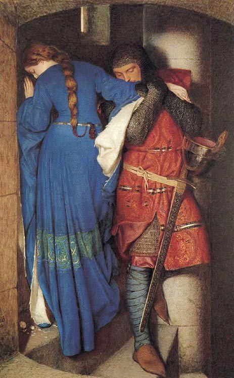
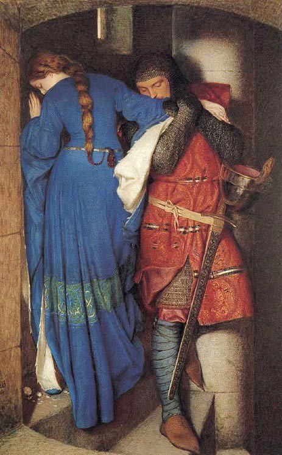

POSTS
"The Meeting on the Turret Stairs"
나는 그 살 냄새 아직 잊지 못하네,

“The Meeting on the Turret Stairs” - Frederic William Burton (Watercolour, 95.5 x 60.8 cm. 1864)
[National Gallery of Ireland]
POSTS
나는 그 살 냄새 아직 잊지 못하네,

“The Meeting on the Turret Stairs” - Frederic William Burton (Watercolour, 95.5 x 60.8 cm. 1864)
[National Gallery of Ireland]